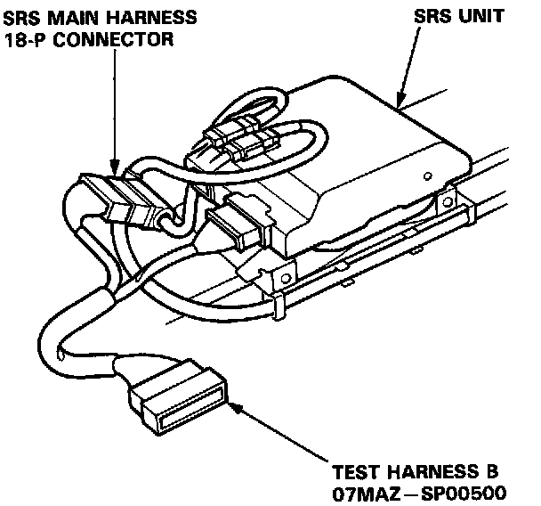
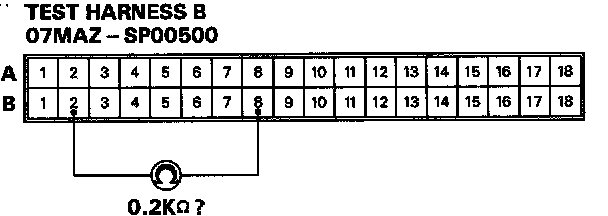
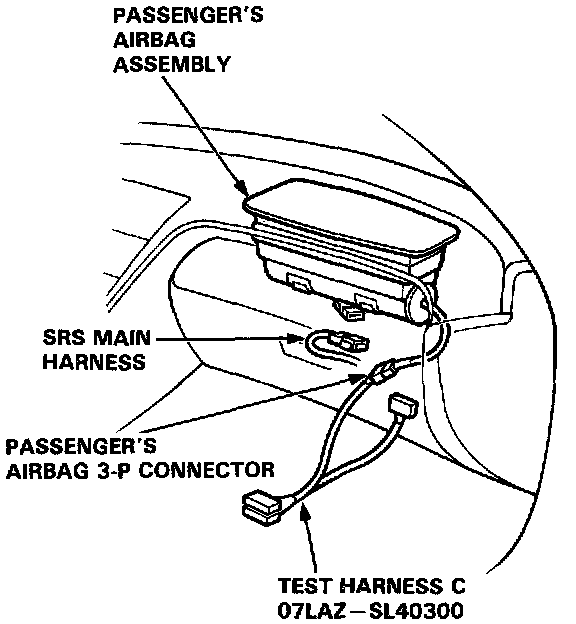
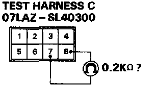

Mode F - Open In Passenger's Airbag Inflator
MODE F: OPEN IN PASSENGER'S AIRBAG INFLATOR.1. Before disconnecting any part of the SRS wire harness, install the short connectors.
2. Connect Test Harness B (O7MAZ-SPOO5OO) between the SRS unit and SRS main harness 18-P connector.
NOTE: Reconnect the passenger's airbag connector for the following test.

3. Measure the resistance between the No.2 terminal and the No.8 terminal.

- If resistance is more than 0.2 K Ohms, go to step 4.
- If resistance is less than 0.2 K Ohms, the SRS unit is faulty. Substitute a known-good SRS unit and recheck the voltages.
4. Disconnect the passenger's airbag 3-P connector from the SRS main harness, then connect Test Harness C (O7LAZ-SL40300) to the passenger's airbag side of the connector.

5. Measure the resistance between the No.7 terminal and the No.8 terminal.

- If resistance is more than 0.2 K Ohms, the passenger's airbag inflator is faulty. Replace the passenger's airbag assembly and recheck the voltages according to the chart on page 23-341.
- If resistance is less than 0.2 K Ohms, the SRS main harness is faulty. Replace it and recheck the voltages.